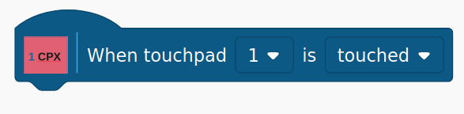

The Circuit Playground Express Blocks
The blocks consist of a set of HAT blocks that have a bump at the left top, boolean blocks that have pointed ends, reporter blocks that are rounded in shape, and command blocks that are rectangular in shape.
HAT Blocks
HAT blocks test for a specific condition. When that condition is met for the first time, all of the blocks under the HAT block execute.
When BUTTON Switch Is Pressed/Released

This block allows you to be notified when either button switch A or B, and the button is either pressed or released.
When SLIDE Switch Is Moved Left/Right
This block executes when the slide switch moves to the selected position.
When CPX Position Is TILT_POSITION

This block executes when the Playground Express tilt position changes to Flat, Up, Down, Left, or Right.
When A Loud Sound Is Detected

This block executes when a relatively loud sound is detected. The sound only needs to be momentary, such as a hand clap.
When A Touchpad Is Touched/Released

This block executes when the selected touchpad is either touched
or released.
Boolean Blocks
Boolean blocks test for a specific condition and return either True or False.
BUTTON Switch Is Pressed/Released
This block returns TRUE if the selected switch is currently in the selected state. Otherwise, it returns FALSE.
Light/Temperature Sensor Value is > or < Specified Value
This block compares the current value of the selected sensor, using the selected operator, to the value entered by the user.
Tilt Position of The CPX

This block returns TRUE if the CPX is currently in the selected tilt position.
Selected Touchpad is Currently Touched/Released
This block returns TRUE if the selected touchpad is currently in the selected state.
Reporter Blocks
Reporter blocks retrieve the current value for a selected sensor.
Current Light/Temperature Value

This block returns the current value for the selected sensor. The light value is non-calibrated, and the temperature is expressed in degrees Celsius.
Command Blocks
Command blocks control actuators on the CPX.
Set Neopixel To Color
This block sets the selected neopixel to the red, green, and blue values entered. To turn a neopixel off, set its r, g, and b values to zero.
Play A Tone

This block plays a tone at the specified frequency in Hertz for the duration specified in milliseconds
Board LED On/Off

This block controls the state of the red board LED.
Copyright (C) 2019-2020 Alan Yorinks All Rights Reserved